Questão 2 · Escala de Coma de Glasgow · Escala de Coma de Glasgow · Neurologia · 4000183339Qual dos seguintes componentes da escala de GLASGOW é a mais preditiva de desfechos neurológicos?
A Abertura ocular.
B Resposta verbal.
C Resposta motora.
D Lucidez.
Questão 3 · Hipertensão Intracraniana · Manejo Clínico · Quadro Clínico e Indicações de Tomograf ia de Crânio · 4000182788Paciente de 14 anos foi trazido à Emergência após queda de bicicleta. À admissão, encontrava-se consciente queixando-se de dores em todo o corpo. A tomogra a computadorizada de crânio revelou coleção de sangue hiperdensa à esquerda, que não cruzava o tentório, mas que não era limitada pelas suturas. Ao retornar para a Sala de Observação, o paciente teve perda transitória de consciência, apresentando hemiparesia à direita e dilatação pupilar ipsilateral. O declínio rápido de seu estado mental neste momento indica a necessidade de
A administrar opioide contínuo intravenoso.
B iniciar corticoterapia intravenosa.
C realizar angiorressonância de crânio.
D realizar intubação endotraqueal.
Questão 4 · Quadro Clínico e Indicações de Tomograf ia de Crânio · Neurologia · Hematoma Subdural · 4000181801Leia o caso clínico. Um idoso com doença de Parkinson há mais de 10 anos passa A apresentar quedas frequentes em domicílio. Familiares se preocupam com quadro parecido com demência no último mês. Família o leva a consulta com neurologista, que percebe sonolência excessiva, desatenção, dificuldade de obedecer a comandos, além de hemiparesia esquerda leve. De acordo com o exposto, sua tomografia de crânio deve mostrar, no lado direito de seu cérebro,
A hematoma epidural.
B AVC de artéria cerebral média.
C hematoma subdural.
D hemorragia em núcleos da base.
Questão 5 · Manejo Clínico · Quadro Clínico e Indicações de Tomograf ia de Crânio · Neurologia · 4000181699Um paciente de 58 anos de idade sofreu queda de aproximadamente 6 metros. Atendido na cena, ele consegue falar seu nome, tem pulso de 115 bpm, regular, pressão arterial de 100x60 mmHg e saturação de oxigênio de 88%. Duas horas após a queda, chega ao pronto-socorro com respiração ruidosa, frequência cardíaca de 120 bpm, pressão arterial de 100x70 mmHg e Glasgow 6. Está anisocórico, sendo a pupila direita maior que a esquerda. A respeito desse traumatizado, é correto afirmar:
A Provavelmente, trata-se de hematoma epidural, com o quadro clínico clássico de intervalo lúcido.
B O tratamento desse paciente precisa ser passado imediatamente para a equipe de neurocirurgia.
C A frequência cardíaca alterada é, provavelmente, secundária à lesão cerebral traumática grave.
D A anisocoria com pupila maior à direita sugere lesão com efeito de massa localizada do lado esquerdo do cérebro.
Questão 6 · Epidemiologia e Fisiopatologia · Classif icação · Quadro Clínico e Indicações de Tomograf ia de Crânio · 4000181597Um paciente, vítima de acidente automobilístico, chega ao hospital trazido pela equipe de atendimento pré-hospitalar já intubado, hemodinamicamente instável e anisocórico. Na admissão, foi realizada tomografia computadorizada de crânio que mostrou imagem hiperdensa no encéfalo, próximo à calota craniana, em região parietal, de aspecto côncavo-convexo e com importante desvio de linha média. Qual é o diagnóstico e o tratamento mais indicado para esse paciente?
A Hematoma epidural / Abordagem cirúrgica.
B Hematoma subdural / Abordagem cirúrgica.
C Hematoma intraparenquimatoso / Monitorização da pressão intracraniana.
D Lesão axonal difusa / Abordagem cirúrgica.
E AVC isquêmico / Manitol endovenoso.
Questão 7 · Hipertensão Intracraniana · Quadro Clínico e Indicações de Tomograf ia de Crânio · 4000168903Traumatismo Craniencef álico Após um jogo de futebol, um torcedor do Time A foi agredido por torcedor um torcedor do Time B, com perda de consciência. A vitima foi encaminhada ao Pronto Socorro, sendo admitido com cefaleia e vômitos, em Glasgow 15. Foi avaliado pelo médico plantonista e liberado para casa, sem acompanhante. Chegando em casa deitou-se para dormir. No dia seguinte sua mãe o encontrou morto. Diante desses fatos qual a principal hipótese diagnóstica para a causa mortis?
A Hipertensão intracrania por hematorna extradural agudo.
B Hipertensão Intracrania por tumor Cerebral.
C Hipertensão Intracrania por síndrome do segundo impacto.
D Hipertensão intracrania por inchaço cerebral ("brain swelling").
Questão 8 · Hipertensão Intracraniana · Manejo Clínico · Classif icação · 4000168901A equipe de socorro pré-hospitalar atende um homem, de 36 anos, vítima de queda de aproximadamente4 metros de altura. O Paciente encontrava-se em decúbito dorsal, irresponsivo e com a cabeça e cervical mantidas alinhadas por um vizinho. Ao exame apresentava respiração irregular, que aumentava em profundidade e depois diminuía e presença de sangue em narinas e orelhas. o Paciente aceitou a cânula orofaríngea e a via aérea está pérvia. Foi posicionado o dispositivo ventilatório máscara-bolsa e ventilado com frequência de 12 vezes/minuto. A pupila direita está midriática; frequência de pulso de 54 bpm, com pulso regular; saturação periférica de oxigênio de 96%; pele fria, seca e pálida; pontuação de Glasgow = 7 (abertura ocular 2; resposta verbal 1; melhor resposta motora 4). A avaliação secundária foi realizada a caminho do hospital. O paciente é coberto com cobertor quente, a pressão arterial é de 190/100 mmHg e o eletrocardiograma revela bradicardia sinusal, com contrações ventriculares isoladas. Sobre o caso acima, assinale a alternativa correta.
A As lesões traumáticas cerebrais são extremamente complexas e o atendimento pré- hospitalar agrega pouco valor ao desfecho final, devendo o paciente chegar ao hospital o mais rápido possível.
B A assistência especializada a esse paciente visa, principalmente, prevenir a lesão cerebral primária, já que não há meios de controlar a lesão cerebral secundária.
C A descrição clínica do quadro do paciente aponta para uma importante gravidade, porém, não há critérios que apontem para um alto risco de herniação cerebral.
D O padrão ventilatório descrito na avaliação inicial do paciente pela equipe de emergencistas aponta para um padrão ventilatório denominado respiração de Cheyne Stokes.
Questão 9 · Traumatismo Cranioencef álico · Manejo Clínico · Quadro Clínico e Indicações de Tomograf ia de Crânio · 4000168132Sobre o manejo do paciente vítima de traumatismo cranioencefálico na emergência, assinale a alternativa CORRETA.
A Profilaxia para TEV não está indicada.
B Hiperventilação deve ser instituída precocemente.
C A fenitoína não deve ser utilizada de rotina como prevenção de crises convulsivas.
D A ventilação não invasiva é alternativa viável para suporte ventilatório no TCE grave.
E Pacientes com ISS elevado, maior idade e comorbidades possuem melhor prognóstico.
Questão 10 · Quadro Clínico e Indicações de Tomograf ia de Crânio · Traumatismo Craniencef álico · 4000168130Após a estabilização do quadro, é realizada uma tomografia de crânio, evidenciada na imagem abaixo. O que foi encontrado nessa imagem? Fonte das imagens: Case study, Radiopaedia.org. (accessed on 19 Oct 2021) https://radiopaedia.org/cases/34072
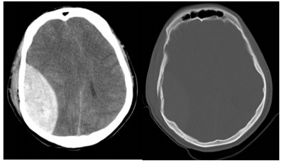
A Hematoma Misto sem fratura de crânio associada.
B Hematoma epidural associado com fratura de crânio.
C Hematoma subdural associado com fratura de crânio.
D Hematoma epidural sem fratura de crânio associada.
E Hematoma Subdural sem fratura de crânio associada.
Questão 11 · Escala de Coma de Glasgow · Avaliação Inicial · Cirurgia · 4000167755Um paciente foi levado pelo Serviço de Atendimento Móvel de Urgência (SAMU) à emergência de um hospital com história de atropelamento há alguns minutos. Ao exame físico, o paciente apresenta FC =110 bpm, FR = 28 irpm, SatO2 = 90% e PA = 100 mmHg x 75 mmHg. Ao ser questionado, apenas verbaliza algumas palavras sem sentido, e demonstra abertura ocular à dor e resposta motora de exão anormal. A ausculta respiratória indica murmúrio vesicular ausente à direita e normais à esquerda. Exames cardiovascular e abdominal não há alterações. Com base nesse caso clínico e nos conhecimentos médicos correlatos, julgue o item a seguir. Nesse caso clínico, a escala de coma de Glasgow do paciente é 9.
A Certo.
B Errado.
Questão 12 · Quadro Clínico e Indicações de Tomograf ia de Crânio · Avaliação Inicial · Cirurgia · 4000167357Homem, 68a, tem queda da própria altura, sofrendo ferimento corto-contuso em região do supercílio direito. Nega perda de consciência, amnésia lacunar e ingesta de bebida alcoólica prévia. Antecedente pessoal: tabagista 45 maços-ano e hipotireoidismo, sem acompanhamento adequado. Durante a sutura evidenciou-se que o ferimento alcançava o osso frontal. A INDICAÇÃO DE OBSERVAÇÃO CLÍNICA E/OU TOMOGRAFIA COMPUTADORIZADA DE CRÂNIO É DEVIDO A(O):
A Idade do paciente
B Profundidade do ferimento.
C Tabagismo.
D Hipotireoidismo.
Questão 13 · Escala de Coma de Glasgow · Escala de Coma de Glasgow · Escala de Coma de Glasgow · 4000166373Uma paciente de 13 anos foi levada ao pronto-socorro com rebaixamento do nível de consciência. A mãe relata que, no dia anterior, percebeu a lha mais lenta ao se deitar. Acordou com o barulho dela se “debatendo” de madrugada por cerca de cinco minutos, após os quais ela cou muito sonolenta. Foi admitida sonolenta, com resposta inespecí ca motora ao estímulo doloroso, falando palavras desconexas e abrindo os olhos ao ouvir seu nome. O exame neurológico cou prejudicado pela sonolência, mas apresentava discreta rigidez de nuca, sem outras alterações relevantes. Foi realizada uma tomogra a computadorizada de crânio que veio sem alterações. O liquor foi colhido e estava límpido, com 10 células, 100% linfócitos, proteína e glicose normais. Optou-se por realizar uma ressonância magnética cerebral que apresentou discreto hiper-sinal em T2 e FLAIR nas regiões temporais. Qual o valor da escala de coma de Glasgow na admissão do paciente?
A Seis.
B Oito.
C Dez.
D Doze.
Revisar: possível letra faltando em enunciado
Questão 14 · Neurologia · Traumatismo Craniencef álico · 4000166158Um menino de cinco anos de idade foi atropelado e sofreu traumatismo cranioencefálico (TCE) grave. Chegou ao pronto- socorro inconsciente e com escala de coma de Glasgow igual a 7. Foi realizada intubação orotraqueal e tomogra a de crânio, que revelou edema cerebral e ausência de hematomas, sem sinais de herniação cerebral. Com base nesse caso hipotético, assinale a alternativa que apresenta a conduta inicial mais adequada.
A sedação e analgesia, sem utilizar cetamina, que é contraindicada por elevar a pressão intracraniana
B hiperventilação com PaCO₂ < 30 mmHg
C infusão de solução salina hipertônica a 20%, em bólus de 0,5 mL/kg
D manter normotermia com temperatura central menor que 38 °C
E manter pressão intracraniana abaixo de 5 mmHg
Questão 15 · Hipertensão Intracraniana · Quadro Clínico e Indicações de Tomograf ia de Crânio · Cirurgia · 4000166132Um homem de 35 anos de idade foi vítima de acidente automobilístico e encaminhado ao pronto-socorro. Na admissão, estava consciente, comunicativo, com hálito etílico e com períodos confusionais e de agitação, mas movimentava todos os quatro membros sem de cits e deambulava. Não guardava nenhuma recordação do acidente (escala de coma de Glasgow = 14 pontos). Havia contusões no couro cabeludo e fratura da clavícula direita. Seis horas após a admissão, o paciente encontrava-se sonolento e respondendo mal aos comandos verbais (escala de coma de Glasgow = 11 pontos). As principais imagens do exame de tomografia computadorizada cranioencefálica (TC) sem contraste são mostradas abaixo. Com base na história clínica, na evolução neurológica e no exame de neuroimagem desse caso hipotético, é correto afirmar que o diagnóstico é o de
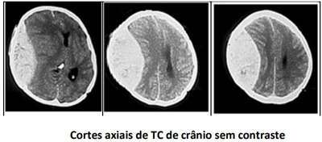
A hematoma extradural agudo.
B hematoma subdural agudo.
C hematoma intracerebral.
D lesão axonial difusa de grau moderado.
E contusão cerebral por contragolpe e efeito expansivo.
Questão 16 · Emergências Pediátricas · Hipertensão Intracraniana · Hipertensão Intracraniana · 4000165102O traumatismo cranioencefálico (TCE) é a principal causa de morte por trauma na população pediátrica. A marca registrada do TCE grave é o coma e Escala de Coma de Glasgow (ECG) com escore entre 3-8. Sobre esta situação selecione a opção correta. I – Na estabilização inicial a euvolemia é o alvo, e líquidos hipotônicos devem ser rigorosamente evitados; a solução salina isotônica é o líquido de escolha. II – A terapia de primeira linha inclui a elevação da cabeceira do leito, garantindo o posicionamento da linha média da cabeça, ventilação mecânica controlada, sedação e analgesia. III – O principal sinal de que um paciente esteja evoluindo para herniação transtentorial ou deterioração neurológica é o aprofundamento de três ou mais pontos na ECG, qualquer que seja a pontuação inicial
A As afirmativas I e II são verdadeiras. A afirmativa III é falsa.
B As afirmativas I e III são verdadeiras. A afirmativa II é falsa.
C As afirmativas II e III são verdadeiras. A afirmativa I é falsa.
D As afirmativas I, II e III são verdadeiras.
E As afirmativas I, II e III são falsas.
Questão 17 · Classif icação · Quadro Clínico e Indicações de Tomograf ia de Crânio · Traumatismo Craniencef álico · 4000171882Por definição, Trauma Cranioencefálico (TCE) é qualquer agressão que acarrete como resultado lesão anatômica ou comprometimento de couro cabeludo, crânio, meninges ou encéfalo. Constitui a principal causa de morte e sequelas na faixa etária pediátrica. Sobre essa temática, assinale a alternativa INCORRETA:
A A grande maioria dos Traumatismos Cranioencefálicos (TCE) na faixa pediátrica são leves (85%)
B A escala de goma de Glasgow abaixo de 3 indica TCE gravíssimo.
C A presença de TCE + cefaleia, confusão, sonolência ou rebaixamento de consciência leva a pensar em hipertensão intracraniana.
D O Glasgow menor ou igual a 8 indica trauma grave.
Questão 18 · Neurologia · Hematoma Extradural · 4000146305Homem de 54 anos dá entrada na emergência consciente e orientado, após sofrer queda da própria altura ao sair do bar, onde tinha ingerido grande quantidade de bebidas alcoólicas. Trazido pelo corpo de bombeiros ao hospital, relatou que estava se sentindo bem, mas que não lembrava do que havia acontecido. Duas horas após sua admissão, enquanto aguardava realização de exames, o paciente perdeu a consciência. Na reavaliação, ECG = 6 e pupilas anisocóricas. Qual o provável diagnóstico e a topografia anatômica da causa do rebaixamento de nível de consciência?
A Paciente com provável hematoma intraparenquimatoso com herniação uncal / lesão de veias na aracnoide.
B Paciente com provável hematoma subdural com herniação uncal / lesão de artéria meníngea média.
C Paciente com provável hematoma extradural com herniação uncal / sangramento de artéria meníngea média.
D Paciente com provável hematoma subdural sem herniação uncal / sangramento de veias subdurais.
E Paciente com provável brain swelling sem herniação uncal / sangramento intracelular.
Questão 19 · Neurologia · Lesões Focais · 4000146252Paciente de 37 anos é trazido ao pronto-socorro após queda do telhado de aproximadamente 7 metros. Acompanhante relata que apresentou convulsões no local. Ao exame de entrada: vias aéreas pérvias, sem sinais de obstrução, com colar cervical; murmúrio vesicular presente difusamente no hemitórax direito e esquerdo, sem alterações à percussão ou palpação. Estável hemodinamicamente, com bulhas rítmicas, não abafadas. Ao exame neurológico, apresentava abertura ocular ao estímulo doloroso, emitia sons incompreensíveis e localizava o estímulo doloroso. Este mesmo paciente foi submetido à tomogra a de crânio abaixo, sem contraste endovenoso. A imagem tomográfica é sugestiva de:
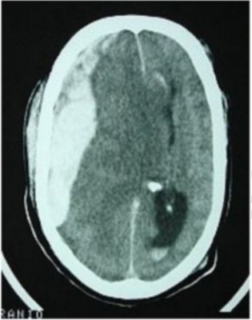
A Hematoma subdural agudo.
B Hematoma intraparenquimatoso.
C Hemorragia subaracnóidea.
D Hematoma epidural agudo.
Questão 20 · Classif icação · Neurologia · 4000146251Paciente de 37 anos é trazido ao pronto-socorro após queda do telhado de aproximadamente 7 metros. Acompanhante relata que apresentou convulsões no local. Ao exame de entrada: vias aéreas pérvias, sem sinais de obstrução, com colar cervical; murmúrio vesicular presente difusamente no hemitórax direito e esquerdo, sem alterações à percussão ou palpação. Estável hemodinamicamente, com bulhas rítmicas, não abafadas. Ao exame neurológico, apresentava abertura ocular ao estímulo doloroso, emitia sons incompreensíveis e localizava o estímulo doloroso. Levando em consideração a escala de coma de Glasgow tradicional, e conforme a 10a edição do Advanced Trauma Life Support (ATLS), o paciente apresenta:
A Traumatismo cranioencefálico leve.
B Traumatismo cranioencefálico moderado.
C Traumatismo cranioencefálico grave.
D Traumatismo cranioencefálico cirúrgico.
Questão 21 · Quadro Clínico e Indicações de Tomograf ia de Crânio · Neurologia · 4000145891Um paciente de 23 anos de idade foi levado ao pronto-socorro em prancha longa e com colar cervical após história de politrauma por acidente de trânsito. O atendimento pré-hospitalar relatou colisão de moto versus anteparo xo, em alta energia cinética, e perda momentânea da consciência do paciente no local. Na sala de trauma, foram observados sinais de traumatismo cranioencefálico grave, escala de coma de Glasgow com 8 pontos, midríase em pupila direita e um episódio de vômito. Com base nessa situação hipotética, é correto inferir que a lesão, sua gênese, a lateralidade acometida e o tratamento são, respectivamente,
A lesão axional difusa por concussão cerebral e contragolpe à esquerda e tratamento conservador.
B hematoma subdural por lesão de vasos corticais à direita e craniotomia descompressiva à esquerda.
C hematoma epidural agudo por sangramento da artéria meníngea média à direita e craniotomia descompressiva à direita.
D fratura da base do crânio com extensão à direita, hemorragia do polígono de Willis e abordagem cirúrgica com acesso mastóideo à direita.
E hematoma subaracnóideo traumático por sangramento da artéria vértebro-basilar à esquerda e abordagem endovascular.
Questão 22 · Hipertensão Intracraniana · Neurologia · 4000145710Sabe-se que a hipertensão intracraniana é fator preponderante no desfecho desfavorável dos pacientes com traumatismo craniano. Nesse particular, é correto afirmar que
A o nervo facial é o nervo mais frequentemente afetado na síndrome de hipertensão intracraniana.
B a hiperventilação reduz a PaCO2 e como consequência a pressão intracraniana (PIC) através de vasoconstricção e redução no volume sanguíneo intracraniano.
C o aumento da pressão intracraniana (PIC) leva à elevação da pressão de perfusão cerebral (PPC) e do fluxo sanguíneo cerebral (FSC).
D hipotensão arterial, bradicardia e irregularidade respiratória (Tríade de Cushing) são manifestações de hipertensão intracraniana.
E as herniações cerebrais ocorrem precocemente na síndrome de hipertensão intracraniana.
Questão 23 · Hipertensão Intracraniana · Neurologia · 4000145128Sobre o diagnóstico de HIPERTEN SÃO INTRACRANIANA (HIC), marque verdadeiro ou falso. () A tríade clássica descrita por Harvey Cushing (hipertensão arterial, bradicardia e bradipneia) é considerado um achado importante no diagnóstico de casos graves de HIC; () um achado que pode ser evidenciado em ocorrência lenta de aumento de Pressão intracraniana é o papiledema, mas a ausência desse sinal não descarta a HIC; () A anisocoria também é um marcador importante para a avaliação da HIC; () as lesões intracranianas ocupando mais de 25 mi somente causam assimetria pupilar de mais de 1 mm em 40% dos casos, enquanto um terço de indivíduos com assimetria pupilar maior que 3 mm apresenta lesões focais ipsilateriais.
A V-V-V-V
B V-F-V-V
C V-V-F-V
D F-V-F-V
Questão 24 · Neurologia · Hematoma Subdural · 4000144157Paciente, sexo masculino, 24 anos de idade, é trazido, pelo SAMU, vítima de queda de moto em via expressa há 30 minutos. Dá entrada no pronto socorro com colar cervical e prancha rígida, referindo cefaleia, náusea e vômitos. Ao exame, apresenta parâmetros ABCDE do trauma: A: Via aérea pérvia, mantido colar cervical, SatO2 : 96% com cateter de O2 15L/min; B: murmúrios vesiculares bem distribuídos e sem ruídos adventícios, FR: 20ipm; C: Bulhas rítmicas e normofonéticas, FC: 88bpm, PA: 118x74mmHg, abdome indolor à palpação, pelve estável e toque retal sem alterações; D: escala de coma de Glasgow = 9, pupila direita midriática e pouco reagente, hemiplegia esquerda; E: escoriações, abaulamento e dor à palpação em região parietotemporal direita do couro cabeludo. Foi realizada tomografia de crânio. De acordo com o caso descrito e com o exame de imagem, Identi que a siopatologia da alteração intracraniana identificada no exame de imagem.

A Ruptura da artéria meníngea média.
B Ruptura de vasos superficiais do córtex cerebral.
C Lesão do parênquima cerebral.
D Ruptura de vasos no espaço subaracnoide.
Questão 25 · Neurologia · Lesões Focais · 4000144156Paciente, sexo masculino, 24 anos de idade, é trazido, pelo SAMU, vítima de queda de moto em via expressa há 30 minutos. Dá entrada no pronto socorro com colar cervical e prancha rígida, referindo cefaleia, náusea e vômitos. Ao exame, apresenta parâmetros ABCDE do trauma: A: Via aérea pérvia, mantido colar cervical, SatO2 : 96% com cateter de O2 15L/min; B: murmúrios vesiculares bem distribuídos e sem ruídos adventícios, FR: 20ipm; C: Bulhas rítmicas e normofonéticas, FC: 88bpm, PA: 118x74mmHg, abdome indolor à palpação, pelve estável e toque retal sem alterações; D: escala de coma de Glasgow = 9, pupila direita midriática e pouco reagente, hemiplegia esquerda; E: escoriações, abaulamento e dor à palpação em região parietotemporal direita do couro cabeludo. Foi realizada tomografia de crânio. De acordo com o caso descrito e com o exame de imagem, Indique a principal suspeita diagnóstica que justi que o quadro clínico descrito.
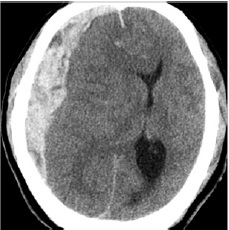
A Hematoma epidural.
B Hemorragia subaracnoide.
C Hematoma subdural.
D Hematoma intraparenquimatoso.
Questão 26 · Neurologia · Lesões Focais · 4000143445Homem, 22 anos, vítima de acidente automobilístico, estava na moto sem capacete e colidiu com carro, tendo no momento do trauma perda momentânea de consciência, a seguir recobrou o nível de consciência, porém com cefaleia, entrando lúcido na ambulância e durante a chegada ao pronto-socorro, apresentou hemiparesia esquerda e midríase a direita, seguido por rebaixamento do nível de consciência, no restante do exame físico se identi cou apenas algumas escoriações em braços e pernas. O tipo de TCE e lateralidade, neste caso, é:
A Hematoma subdural à direita.
B Hematoma subdural à esquerda.
C Lesão axonal difusa.
D Hematoma extradural à direita.
E Hematoma extradural à esquerda.
Questão 27 · Hipertensão Intracraniana · Neurologia · 4000131317Paciente de 76 anos, sexo masculino, com história de trauma craniano há 2 dias (bateu cabeça no batente da porta do carro quando dele saía), foi trazido à Unidade de Emergência por seus familiares por apresentar, há 3 horas, dor de cabeça de forte intensidade, acompanhada de confusão mental (desorientou-se em casa, cou agitado, não reconheceu sua esposa), seguido de crise convulsiva sem recuperação do nível de consciência. No exame clínico, foi notada hipertensão arterial (180x120 mmHg), Glasgow 7, anisocoria a direita. Possui história prévia de infarto do miocárdio há 4 meses, em uso de AAS e clopidogrel. Foi realizado tomografia no pronto socorro, após sedação e intubação orotraqueal em sequência rápida. Fonte: Acervo pessoal Qual a medida clínica mais adequada a ser instituída para controle da hipertensão intracraniana do paciente da questão anterior?

A X Infusão de dexametasona 10 mg intravenosa.
B Infusão de manitol intravenoso.
C Manter a pressão arterial sistólica < 90 mmHg.
D Instituir hipotermia profilática.
E Coma barbitúrico.
Questão 28 · Quadro Clínico e Indicações de Tomograf ia de Crânio · Neurologia · Hematoma Subdural · 4000131316Paciente de 76 anos, sexo masculino, com história de trauma craniano há 2 dias (bateu cabeça no batente da porta do carro quando dele saía), foi trazido à Unidade de Emergência por seus familiares por apresentar, há 3 horas, dor de cabeça de forte intensidade, acompanhada de confusão mental (desorientou-se em casa, cou agitado, não reconheceu sua esposa), seguido de crise convulsiva sem recuperação do nível de consciência. No exame clínico, foi notada hipertensão arterial (180x120 mmHg), Glasgow 7, anisocoria a direita. Possui história prévia de infarto do miocárdio há 4 meses, em uso de AAS e clopidogrel. Foi realizado tomografia no pronto socorro, após sedação e intubação orotraqueal em sequência rápida. Fonte: Acervo pessoal Qual o achado na imagem?
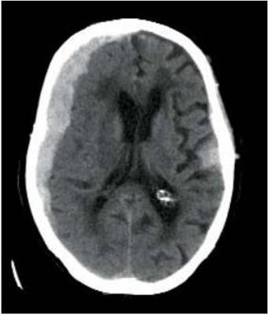
A X Hematoma extradural.
B Hemorragia subaracnoide.
C Hematoma subdural.
D Glioblastoma mutiforme.
E Higroma cístico cerebral.
Questão 29 · Hipertensão Intracraniana · Neurologia · Hipertensão Intracraniana · 4000129956Sobre o traumatismo craniano, é
A A elevação de Pressão Intracraniana (PIC) acima de 7, reduz a perfusão cerebral e piora a isquemia.
B Para manter a perfusão cerebral e a redução do fluxo sanguíneo, uma hipovolemia pode ajudar a diminuir a PIC.
C A dilatação pupilar ipsilateral com hemiparesia contralateral é o sinal clássico de herniação do uncus.
D O objetivo primário do tratamento do trauma craniano é o de diminuir a lesão primária.
Questão 30 · Tratamento da Hipertensão Intracraniana · Hipertensão Intracraniana · Neurologia · 4000129730Paciente masculino, 70 anos, com antecedentes de hipertensão arterial sistêmica bem controlada com anti-hipertensivos, apresentou hemiparesia direita de início súbito. Na admissão ao hospital, o paciente encontra-se consciente, pontuação de 14 na Escala de Coma de Glasgow (AO = 4, RV = 4, RM = 6), perda de força grau 4 a D, pupilas isocóricas e fotorreagentes. Após cerca de 30 minutos, o paciente evolui com rebaixamento do nível de consciência, pontuação de 7 na Escala de Coma de Glasgow (AO = 1, RV = 2, RM = 4), midríase xa a direita, frequência respiratória 8 rpm, FC 48 bpm, PA 240/120 mmHg. Com base nos dados clínicos, assinale a alternativa correta com o diagnóstico e a conduta terapêutica inicial para o quadro descrito.
A Estado de mal não convulsivo e hidantalização.
B Acidente vascular cerebral isquêmico maligno e tomografia de crânio de urgência.
C Tríade de Cushing e infusão de manitol endovenoso em bolus.
D Síndrome de hipertensão intracraniana e intubação orotraqueal.
E Hematoma intracerebral e drenagem cirúrgica de urgência.
Questão 31 · Síndrome de Pancoast · Síndrome de ClaudeBernardHorner · 4000130307Homem, 70a, procura Unidade de Pronto Atendimento com queixa de dor em pontada no peito à direita, há três meses, de intensidade progressiva, que exacerba com a respiração e com irradiação para região do ombro direito, cansaço aos grandes esforços, associados com náusea e fadiga. Antecedente Pessoal: tabagismo; 50 maços/ano. Exame físico: PA= 136x82 mmHg, FC= 88 bpm, FR= 20 irpm, oximetria de pulso (ar ambiente)= 92%; face: ptose à direita; pescoço: gânglios supraclaviculares e face anterior; pulmão: murmúrio vesicular globalmente diminuído; neurológico: Escala de Coma de Glasgow= 15 e pupilas anisocóricas, miótica à direita. Radiograma de toráx: O ACHADO NO EXAME FÍSICO ESPERADO NESSA SITUAÇÃO É:

A Enoftalmia a direita.
B Exoftalmia a esquerda.
C Enoftalmia a esquerda.
D Exoftalmia a direita.
Questão 32 · Traumatismo Cranioencef álico · Hipertensão Intracraniana · Manejo Clínico · 4000123471Paciente de 18 anos sofreu trauma de crânio por acidente com veículo automotor. Ao chegar à Emergência, foi intubado. Apresentava pupilas reativas de 5 mm e reflexos corneano e de tosse. Não havia abertura ocular à dor, e a postura era em extensão bilateral. A avaliação dos sinais vitais revelou pressão arterial de 139/83 mmHg, batimentos cardíacos de 101 bpm, frequência respiratória de 8 mpm e saturação de oxigênio de 98%. Exames laboratoriais indicaram hemoglobina de 9,7 g/dl e glicemia de 107 mg/dl. A tomografia computadorizada (TC) de encéfalo encontra-se reproduzida abaixo. Qual a próxima medida a ser tomada?
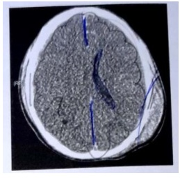
A Repetir a TC em 12 horas, com intuito de verificar a evolução do trauma.
B Transferir o paciente para Centro de Tratamento Intensivo (CTI) com controle neurológico rigoroso e repetir a TC se houver modificação do quadro neurológico.
C Internar o paciente no CTI com controle tomográfico a cada 6 horas.
D Instalar monitor de pressão intracraniana.
E Submeter o paciente a craniotomia descompressiva.
Questão 33 · Traumatismo Cranioencef álico · Neurologia · Hematoma Extradural · 4000107546Você é chamado para avaliar um paciente na observação do pronto-socorro com história de queda de moto há 2 horas, que chegou ao serviço com escala de coma de Glasgow 15, referindo apenas cefaleia. Após realizar o Rx de crânio e ser medicado com dipirona, evoluiu com rebaixamento do nível de consciência e convulsão. Qual a hipótese diagnóstica?
A Hipotensão causada pela administração de dipirona.
B Contusão cerebral causada por ruptura de vasos intracerebrais.
C Epilepsia exacerbada pelo trauma.
D Hematoma subdural causado pela ruptura de veias tributárias do seio sagital.
E Hematoma extradural causado pela ruptura da artéria meníngea média.
Questão 34 · Manejo Clínico · 4000099348Mulher, 22a, foi trazida ao hospital devido a traumatismo de crânio grave. Encaminhada à UTI após procedimento cirúrgico. Exame físico: PAM= 73 mmHg, FC= 112 bpm, Pressão intracraniana = 22 mmHg, ventilação mecânica FiO₂= 0,60, PEEP= 8 cmH₂O, oximetria de pulso 100%. Sódio= 147mEq/L, Potássio= 4,1mEq/L, hemoglobina= 9,7g/dL, RNI= 1,3, R=1,1. A CONDUTA É:
A Manter decúbito em proclive.
B Manter sódio entre 130 e 135 mEq/L.
C Prescrever corticosteroide.
D Prescrever noradrenalina.
Questão 35 · Classif icação · Quadro Clínico e Indicações de Tomograf ia de Crânio · Classif icação · 4000099225Mulher, 70a, chega ao Pronto Socorro após queda da própria altura. Antecedente pessoais: hipertensão arterial sistêmica em uso de losartana 50mg/dia e acidente vascular isquêmico transitório em uso de ácido acetilsalicílico 100mg/dia. Exame físico: PA= 152x87 mmHg, FC= 72bpm, FR= 16irpm, oximetria de pulso (ar ambiente)= 99%; Face: ferimento em torno 2,0 cm na região do supercílio esquerdo; neurológico: Escala de Coma de Glasgow= 15 e pupilas isocóricas fotorreagentes. Realizou-se sutura. A CONDUTA É:
A Radiograma de crânio.
B Alta médica.
C Antibiótico por 48 horas.
D Observação clínica.
Questão 36 · Escala de Coma de Glasgow · Via Aérea Def initiva · Cirurgia · 4000081349Um paciente está em atendimento na emergência de uma UPA após ter sido vítima de queda de andaime (6 metros). Após a estabilização hemodinâmica, o médico plantonista avalia o estado neurológico, verificando que o paciente abre os olhos apenas ao estimulo doloroso, emite sons incompreensíveis e apresenta rotação interna de MMSS e extensão de MMII ao estímulo doloroso. Em relação à escala de coma de Glasgow (ECG), assistência ventilatória e a conduta definitiva, assinale a alternativa correta:
A ECG: 8, cânula orofaríngea e observação.
B ECG: 6, intubação orotraqueal e transferência para um centro de trauma.
C ECG: 3, oxigênio suplementar por máscara facial e transferência para um centro de trauma.
D ECG: 7, intubação orotraqueal e transferência para um centro de trauma.
Questão 37 · Hematoma Extradural · Hematoma Extradural · 4000065717Paciente de 16 anos deu entrada no Pronto Atendimento, após queda de bicicleta em competição de ciclismo, em área rural, referindo dor de cabeça e na região cervical posterior. A equipe que o transportou até o setor relata a ocorrência de 2 episódios de vômitos e perda da consciência por período curto, além de mencionar fratura exposta no membro inferior direito, onde há lesão de aproximadamente 10 cm com perda de tecido. Na amissão, o menor apresentava-se desperto, lúcido e com escala de coma de Glasgow (ECG) de 13 pontos (abertura ocular espontânea, orientado e retirado do membro a dor) com resposta pupilar (RP) = 0 (pupilas isocóricas e fotorreagentes), além de paresia dos MMSS e MMII. Os sinais vitais revelavam: PA = 90 x 40 mmHg; FC = 50 bpm; FR = 25 irpm; e T.ax. = 35ºC. Após 2 horas de observação, evoluiu com crises convulsivas, midríase bilateral e ECG = 3 pontos, com RP = -2. Em relação ao traumatismo craniano apresentado pelo paciente e sua clínica, podemos afirmar que MAIS PROVAVELMENTE se trata de:
A Hematoma intraparenquimatoso
B Hematoma epidural
C Hematoma subdural
D Lesão cerebral difusa
E Lesão cerebral focal
Questão 38 · Fratura de Base de Crânio · Cirurgia · Fratura de Base de Crânio · 4000002728São sinais de fratura de base de crânio
A Sinal de Guaxinim, Battle e Murphy
B Otorrinoliquorréia, sinal de Guaxinim e Murphy
C Otorrinoliquorréia, sinal de Guaxinim e Battle
D Sinal de Murphy, Blumberg e Dunphy
E Sinal de Guaxinim, Murphy e Dunphy
Questão 39 · Hematoma Extradural · Hematoma Extradural · 4000120845Um menino de dez anos de idade, vítima de trauma cranioencefálico, foi levado ao hospital pelo resgate após queda do telhado de uma altura de 5 m. Deu entrada na emergência com Glasgow = 13, evoluindo com crise convulsiva, tratada adequadamente com medicação. Foi realizada, ainda, uma tomogra a de crânio que apresentou a imagem seguinte. Com base nesse caso hipotético, assinale a alternativa CORRETA.
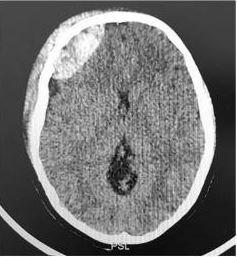
A Deve ser garantida via aérea com intubação, orotraqueal, pois o paciente apresentou crise convulsiva.
B A medicação anticonvulsivante de escolha para o paciente deverá ser um benzodiazepínico.
C Devido à imagem tomográfica de hemorragia subdural, o tratamento deverá ser conservador, com observação neurológica por 12h-24h.
D Corticoide está indicado devido ao edema cerebral ao redor do sangramento.
E Deve ser considerada a neurocirurgia com drenagem de hematoma extradural.
Questão 40 · Escala de Coma de Glasgow · 4000111100Paciente vítima de TCE apresenta, ao exame físico neurológico, abertura ocular ao estímulo doloroso, emitindo sons incompreensíveis e exão anormal dos membros (decorticação) como melhor resposta motora. Qual é o escore da escala de Coma de Glasgow desse paciente?
A 6.
B 7.
C 8.
D 9.
Questão 41 · Traumatismo Cranioencef álico · Manejo Clínico · Manejo Clínico · 4000100757Mulher de 19 anos dá entrada no serviço de emergência, vítima de acidente de moto, não utilizava capacete. As duas condutas mais importantes para evitar a progressão da lesão cerebral que devem ser tomadas no atendimento inicial são:
A Administração de manitol e anticonvulsivante.
B Oxigenação adequada e reanimação volêmica.
C Hipotermia e expansão volêmica.
D Cabeceira elevada e ressuscitação com solução hipertônica.
Questão 42 · Classif icação · 4000096367Assinale a alternativa INCORRETA com relação aos traumas cranioencefálicos (TCE) graves.
A Aproximadamente 30% dos doentes vítimas de lesão cerebral que são tratados na sala de emergência apresentam lesão cerebral grave.
B Correspondem àqueles pacientes com escala de coma de Glasgow de 3 a 8.
C Em pacientes portadores de TCE grave, a hipotensão na admissão é acompanhada de taxa de mortalidade que é maior que o dobro da mortalidade de doentes sem hipotensão.
D A intubação endotraqueal precoce deve ser realizada em doentes comatosos. ida oib pr ed
Questão 43 · Tratamento da Hipertensão Intracraniana · Hipertensão Intracraniana · Quadro Clínico · 4000090133Paciente do gênero masculino, oito anos de idade é vítima de traumatismo cranioencefálico, sendo prontamente intubado, prescrito manitol e hiperventilado. Pelas características clínicas, apresenta a tríade de sintomas descrita por Cushing. Para esta síndrome clínica é CORRETO afirmar:
A Acontece em cerca de 50% dos pacientes com hipertensão intracraniana.
B Esta síndrome foi observada por Harvey Cushing nos primeiros anos do século XX, em um estudo experimental.
C O aumento da Pressão arterial média estimula os barorreceptores, determinando vasoconstrição periférica.
D Esta síndrome raramente determina lesões por herniação cerebral e óbito.
Questão 44 · Hematoma Subdural Agudo · 4000070080Condutor de moto estava sem capacete, quando sofreu um acidente. Populares o levaram até um grande hospital, onde foi diretamente encaminhado à sala de trauma. Ao exame clínico: abria os olhos ao ser chamado pelo nome, balbuciava palavras incompreensíveis e reagia localizando a dor; sinais vitais: FC = 106 bpm; PA = 100 x 80 mmHg; FR = 17 irpm; apresentava laceração em região parieto-occipital esquerda, anisocoria, murmúrio vesicular universalmente audível sem ruídos adventícios, escoriações nos membros superiores, restante do exame físico sem alterações. Após o primeiro atendimento, foi realizada tomogra a computadorizada de crânio, que evidenciou hematoma em forma de lua crescente, acompanhando a tábua e o parênquima encefálico lateralmente. O diagnóstico tomográ co mais provável de ser encontrado no exame desse paciente é de hematoma:
A Epidural.
B Subdural.
C Subgaleal.
D Subaracnoide.
Revisar: possível letra faltando em enunciado
Questão 45 · Emergências Pediátricas · Manejo Clínico · Neuropediatria · 4000025983Lactante 18 meses é trazido ao pronto- socorro com história de queda do colo do pai (cerca de 1 metro de altura), há cerca de 30 minutos. Pai relata que criança chorou bastante, agora está mais calmo, mas ainda mais irritado que o habitual. Nega vômitos, sonolência ou perda da consciência. Ao exame Glasgow 14. Presença de hematoma parietal esquerdo. Qual melhor conduta?
A Tomografia de crânio e internação pra observação por no mínimo 24 horas
B Observação domiciliar por 72 horas com orientações sobre sinais de alerta para retorno
C Raio x de crânio e internação para observação por no mínimo 24 horas
D Internação para observação durante 24 horas, mantendo dieta zero.
Questão 46 · Emergências Pediátricas · Manejo Clínico · Neuropediatria · 4000025340Criança de 2 anos e 6 meses, previamente hígida, vítima de queda da própria altura há 30 minutos, com trauma em região frontal do crânio. Pais negam perda de consciência, mas relatam 1 episódio de vômito logo após o trauma. Ao exame físico: criança eupneica, estável, corada, hidratada, ativa e reativa, algo irritada ao exame, esquimose em região frontal do crânio, sem outras alterações. Considerando o primeiro atendimento à criança, qual é a recomendação?
A Tomografia computadorizada (TC) de encéfalo, devido à idade de risco (< 3 anos) e observação na Unidade durante 24 horas.
B Observação na Unidade durante 12 horas, sem exames complementares, e alta posterior ao domicílio com orientações por escrito.
C Observação na Unidade até completar 2 horas do trauma, pelo menos, sem necessidade de exames complementares. Após esse período, na ausência de intercorrências, alta para domicílio com orientações aos cuidadores.
D Observação na Unidade por 6 horas, devido ao vômito; radiografias de crânio e região cervical. Alta para domicílio, se radiografias inalteradas.
E Alta para domicílio com retorno agendado para o dia seguinte, quando se deve realizar a TC de encéfalo, aumentando a chance de detecção de hemorragias intracranianas.
Questão 47 · Emergências Pediátricas · Neuropediatria · Escala de Coma de Glasgow · 4000020660O Traumatismo Cranioencefálico (TCE) é o acidente mais prevalente nas crianças menores de 5 anos, em especial nas menores de 1 ano. Ainda que a grande maioria dos casos se apresente como casos leves, de baixa complexidade, o reconhecimento dos casos de risco e a pronta intervenção neles é papel importante do pro ssional que cuida de crianças e adolescentes. No traumatismo cranioencefálico na criança é CORRETO afirmar:
A A classificação TCE baseia-se na escala de coma de Glasgow e é considerado TCE leve a escala de coma de Glasgow de 14 ou 15; TCE moderado escala de coma de Glasgow entre 5 e 13 e TCE grave a escala de coma de Glasgow igual ou menor que 4.
B A clássica síndrome do bebê sacudido (shaken baby) caracteriza-se por ausência de sinais externos de traumatismo, com hemorragia subdural ou subaracnóidea bilateral e hemorragia retiniana.
C Hematoma subdural é caracterizado por presença aguda de sangue no espaço subdural. Forma-se por sangramento arterial, espalhando-se sobre o hemisfério cerebral. Todos os casos são cirúrgicos, com elevados índices de morbimortalidade.
D A contusão cerebral ocorre diametralmente oposta ao local do impacto, pela inércia (lesão de contragolpe). O tratamento geralmente é cirúrgico.
Questão 48 · Emergências Pediátricas · Neuropediatria · Quadro Clínico e Indicações de Tomograf ia de Crânio · 4000020557Considere o seguinte caso: criança de 2 anos e 6 meses, previamente hígida, vítima de queda da própria altura há pouco mais de 2 horas, com trauma em região frontal do crânio. Os pais negam perda de consciência, vômitos ou outras alterações pós-trauma. Ao exame físico, constata-se: criança eupneica, estável, corada, hidratada, ativa e reativa, algo irritada ao exame, leve hiperemia em região frontal do crânio, sem outras alterações. Considerando o primeiro atendimento à criança, o mais recomendável a se fazer é:
A tomografia computadorizada (TC) de encéfalo, devido à idade de risco (< 3 anos) e observação na Unidade durante 12 horas.
B observação na Unidade durante 6 horas, sem exames complementares, e alta posterior ao domicílio com orientações por escrito.
C alta para domicílio com orientações, se possível por escrito.
D alta para domicílio com retorno agendado para o dia seguinte, quando se deve realizar a TC de encéfalo, aumentando a chance de detecção de hemorragias intracranianas.
E manutenção da criança em Unidade de Saúde por, no mínimo, 24 horas, com reavaliações períodicas do quadro neurológico.
Questão 49 · Traumatismo Cranioencef álico · Trauma · Hematoma Subdural Agudo · 4000013083Homem de 35 anos de idade estava pilotando uma motocicleta, quando colidiu com um caminhão, demonstrando politraumatismo. A frequência cardíaca e a pressão arterial dele eram, respectivamente, de 150 bpm e de 80 mmHg x 60 mmHg. As auscultas cardíaca e respiratória estavam normais e apresentava abdome em tábua. Diante disso, realizou-se a retirada do paciente de acordo com as normas do suporte avançado de vida no trauma (ATLS), e foram realizadas tomogra as de crânio, tórax e abdome total. Na tomogra a de crânio, foi revelado hematoma subdural com desvio da linha média superior a 10 mm. No abdome, apresenta lesão hepática grau IV e lesão esplênica grau V. Na tomogra a de tórax, não foram encontrados achados sugestivos de trauma. A respeito desse caso clínico e considerando-se os conhecimentos médicos correlatos, julgue o item a seguir. O tratamento da lesão neurológica deve ser feito com manitol e observação clínica.
A Certo.
B Errado.
Questão 50 · Escala de Coma de Glasgow · Escala de Coma de Glasgow · 4000003327Paciente com Trauma Crânio Encefálico, apresenta abertura ocular a comandos verbais, responde com palavras inapropriadas e localiza dor; tem o escore na Escala de Coma de Glasgow:
A 10
B 9
C 11
D 12
Questão 51 · Fratura de Base de Crânio · Cirurgia · Fratura de Base de Crânio · 4000002266Das alternativas citadas abaixo, qual apresenta sinais de fratura de base de crânio?
A Equimose periorbitária e de mastoide e otorragia.
B Hematoma em região zigomática, saída de liquor pelo nariz e hematoma parietal.
C Sangramento nasal, afundamento de órbita e hemotímpano.
D Hematoma occipital, otorragia e hematoma de mastoide.
Questão 52 · Manejo Clínico · 4000105167As duas medidas mais importantes para evitar a progressão da lesão cerebral traumática durante o atendimento inicial do traumatizado são:
A Oxigenação adequada e reanimação volêmica.
B Trepanação cirúrgica precoce e corticoide.
C Administração de manitol e anticonvulsivante.
D Cabeceira elevada e ressuscitação com solução hipertônica.
E Hipotermia e expansão volêmica.
Questão 53 · Lesões Dif usas · Hipertensão Intracraniana · Manejo Clínico · 4000104863Paciente adulto jovem foi trazido ao setor de urgência duas horas após ter sido vítima de colisão moto versus carro. Ao exame: pressão arterial de 80 x 40 mmHg; frequência cardíaca de 110 bpm; frequência respiratória de 20 irpm. Escala de coma de Glasgow de 6, pupilas isocóricas, sem sinais localizatórios. Após intubação orotraqueal, foi realizada tomogra a computadorizada de crânio que mostrava ventrículos e cisternas diminuídos, hemorragia subaracnóidea traumática e ausência de hematomas intracranianos. Enquanto aguarda transferência para serviço terciário com equipe de neurocirurgia, qual a conduta mais adequada a ser tomada?
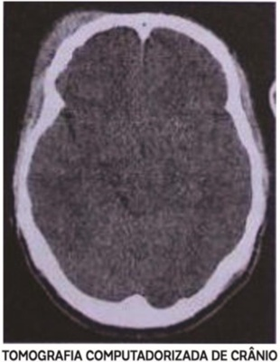
A Administração de solução salina 3%.
B Hiperventilação.
C Sedação profunda com tiopental.
D Administração de manitol 20%.
Questão 54 · Manejo Clínico · Manejo Clínico · 4000103530As duas medidas mais importantes para evitar a progressão da lesão cerebral traumática durante o atendimento inicial do traumatizado são:
A Oxigenação adequada e reanimação volêmica.
B Trepanação cirúrgica precoce e corticoide.
C Administração de manitol e anticonvulsivante.
D Cabeceira elevada e ressuscitação com solução hipertônica.
Questão 55 · Escala de Coma de Glasgow · Escala de Coma de Glasgow · Escala de Coma de Glasgow · 4000078293Paciente com Trauma Cranioencefálico (TCE) abre os olhos ao estímulo doloroso, responde às solicitações verbais de forma confusa e localiza a dor. O escore para esse paciente, no momento, pela Escala de Coma de Glasgow é:
A 12.
B 11.
C 10.
D 09.
Questão 56 · Escala de Coma de Glasgow · Escala de Coma de Glasgow · Escala de Coma de Glasgow · 4000078189Apresenta menor pontuação na escala de coma de Glasgow:
A Resposta motora em decorticação.
B Palavras desconexas como melhor resposta verbal.
C Resposta motora em descerebração.
D Abertura ocular à estimulação verbal.
E Retirada inespecífica como melhor resposta motora.
Questão 57 · Tratamento da Hipertensão Intracraniana · Hipertensão Intracraniana · 4000066873Na abordagem de um paciente com derivação ventricular externa e cateter de monitorização contínua de Pressão Intracraniana, cujo valor está se mantendo acima de 25 mmHg, qual medida NÃO ajuda na preservação da perfusão cerebral?
A Drenagem de liquor pela DVE.
B Infusão de solução hipotônica.
C Aumentar sedação do paciente.
D Hiperventilação.
E Administração intravenosa de agentes inotrópicos.
Questão 58 · Manejo Clínico · Avaliação Inicial · 4000066435Qual é o exame adequado para avaliação inicial do traumatismo crânio-encefálico grave no pronto-socorro?
A Tomografia computadorizada sem contraste.
B Tomografia computadorizada com contraste.
C Radiografia de crânio.
D Ressonância magnética sem contraste.
E Ressonância magnética com contraste.
Questão 59 · Classif icação · Hematoma Extradural · Hematoma Subdural · 4000061679Paciente masculino, de 22 anos de idade, vítima de queda da laje, é admitido no serviço de emergência apresentando TCE, exame neurológico com desorientação, cefaleia, náuseas, distúrbio visual e dé cit neurológico focal. O quadro apresentado é compatível com:
A concussão
B contusão cerebral
C hemorragia cerebral
D estado de mal epilético
Questão 60 · Brain Swelling · Lesão Axonal Dif usa · Hematoma Extradural · 4000059639Paciente masculino, 35 anos, vítima de colisão auto anteparo, com Trauma Cranioencefálico, foi trazido ao Pronto Socorro pelo SIATE, imobilizado em tábua rígida, com colar cervical e máscara de oxigênio, respiração ruidosa e auxílio de musculatura acessória. Após aspiração das vias aéreas e manejo inicial, o paciente estava sonolento, Glasgow de 12 e hemodinamicamente estável. Durante uma rápida reavaliação, 20 minutos mais tarde, observou-se queda do nível de consciência, com Glasgow de 9, porem mantendo-se estável hemodinamicanente, com discreta elevação da PA. O médico assistente solicitou uma TAC de crânio. Assinale a alternativa que contém o provável achado tomográ co e o diagnóstico esperado, como causa do rebaixamento do nível de consciência neste paciente.
A Velamento dos ventrículos - Ruptura do plexo coróide.
B Imagem de lente biconvexa - Hemorragia extra-dural.
C Perda dos giros cerebrais - Hemorragia subaracnóidea.
D Parênquima cerebral heterogeneo - Lesão axonal difusa.
Revisar: possível letra faltando em enunciado
Questão 61 · Hematoma Subdural Agudo · Hipertensão Intracraniana · Manejo Clínico · 4000054798Eletricista de 45 anos vítima de choque elétrico e queda de 5 metros de altura dá entrada inconsciente, com colar, imobilizado, Glasgow 5. Após intubação, com saturação 99%, o paciente tem FC 100, PA: 120x80. Realizou TC de crânio que mostrou a imagem abaixo. Sobre o caso clínico acima, é correto afirmar que:
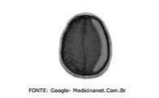
A existe provável lesão de artéria meníngea média.
B é imprescindível instalar manitol e dexametasona como tratamento medicamentoso.
C caso este paciente fique hipertenso enquanto aguarda a avaliação do neurocirurgião de sobreaviso,tratamos com Nitroprussiato de sódio.
D internar o paciente em Semi Intensiva e repetir a tomografia de crânio em 48 horas.
E trata-se de um Hematoma Subdural com necessidade de abordagem cirúrgica.
Questão 62 · Escala de Coma de Glasgow · 4000043659Em relação ao paciente acima (Questão 25), a pontuação na Escala de Glasgow cai para 7, sendo levado à UTI, sedado e entubado. Qual das medidas terapêuticas abaixo NÂO se deve realizar?
A Manter PCO2 entre 25 e 28mmHg.
B Usar solução salina hipertônica.
C Usar manitol quando houver sinais de pressão intracraniana elevada.
D Manter decubito elevado 30°, cabeça neutra e queixo alinhado ao tórax.
E Prescrever fenitoína.
Questão 63 · Contusão Cerebral · 4000043655Homem, 27 anos envolvido em acidente moto ciclistico em alta velocidade (colisão). Admitido na emergência terciária com 9 pontos na escala de Glasgow, realizou a imagem abaixo. Qual o diagnóstico provável?
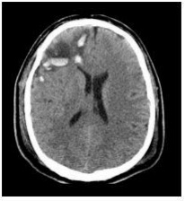
A Concussão clássica
B Concussão simples
C Lesão axonal difusa
D Contusão cerebral
E Hematoma subdural
Questão 64 · Emergências Pediátricas · Manejo Clínico · Neuropediatria · 4000024448Criança de sete anos de idade, vítima de acidente automobilístico, apresenta o seguinte quadro neurológico: abertura ocular a estímulo verbal, retirada do membro do local a estímulo doloroso e com resposta confusa e desorientada às solicitações verbais. Baseado no quadro neurológico do paciente, qual a conduta adequada?
A Aguardar em observação por 12 horas e dar alta se estabilizar o quadro neurológico.
B Observar alterações cardiorrespiratórias, internar e realizar tomografia de crânio.
C Realizar Rx de crânio e solicitar internação se houver a presença de fratura óssea.
D Internar para avaliar quadro clínico e, se apresentar piora, fazer exame de imagem.
Questão 65 · Síndrome do Neurônio Motor Superior e Inf erior · 4000116737Paciente masculino, com 72 anos, hipertenso, alcoolista, refere que há 15 dias iniciou progressiva perda de força no dimídio esquerdo, que se iniciou como di culdade para deambular ("arrasta a perna"-sic) e evoluiu para o membro superior esquerdo. Família refere queixa de cefaleia persistente e sonolência. São diagnósticos mais prováveis, exceto:
A Síndrome de Guillain-Barré.
B Hematoma subdural crônico.
C Neoplasia intracraniana.
D Abcesso cerebral.
Questão 66 · Hematoma Extradural · 4000106102No trauma crânio encefálico qual tipo de lesão, com maior frequência, apresenta intervalo lúcido na sua evolução?
A Hematoma extradural.
B Lesão por contra-golpe.
C Hemorragia subaracnóidea.
D Hematoma subdural.
E Hematoma intraparenquimatoso.
Questão 67 · Traumatismo Cranioencef álico · Traumatismo Craniencef álico · 4000098372Homem, 73a, referindo queda da própria altura há quatro horas, teve ferimento cortocontuso na região temporal esquerda sem perda de consciência, em uso de clopidogrel. Exame físico: escala de coma de Glasgow = 15, pupilas isocóricas e fotorreagentes. Além da sutura do ferimento, a conduta é:
A Realizar radiograma de crânio e solicitar hemograma.
B Realizar tomografia computadorizada de crânio e profilaxia para tétano.
C Realizar tomografia computadorizada de crânio e solicitar coagulograma.
D Realizar radiograma de crânio e iniciar antibioticoterapia.
Questão 68 · Escala de Coma de Glasgow · Escala de Coma de Glasgow · Escala de Coma de Glasgow · 4000090935A Escala de Glasgow é usada para quantificar:
A Grau de comprometimento neurológico.
B Grau de edema cerebral.
C Prognóstico de lesão neurológica.
D Gravidade de lesão axonal difusa exclusivamente.
E A sedação que interfere na interpretação do estado do paciente.
Questão 69 · Escala de Coma de Glasgow · Escala de Coma de Glasgow · 4000061645Paciente de 52 anos de idade, masculino, é atendido na emergência após sofrer Traumatismo Cranioencefálico (TCE) por queda de telhado. Ao exame neurológico inicial, apresentava-se alerta, porém desorientado e com períodos de agitação psicomotora. O médico que o atendeu, classi cou sua avaliação inicial como TCE leve, com pontuação de 14 na escala de coma de Glasgow, pois o paciente:
A Encontrava-se confuso, atendendo aos comandos verbais e com abertura ocular espontânea.
B Localizava adequadamente ao estimulo doloroso, resposta verbal com palavras incompreensíveis e abria os olhos aos chamados.
C Apresentava resposta motora com flexão normal, tinha abertura ocular a estímulos dolorosos e emitia sons incompreensíveis.
D Abria os olhos a estímulos dolorosos, sem resposta verbal e durante a manipulação do exame físico, apresentava extensão anormal.
Questão 70 · Escala de Coma de Glasgow · 4000052492Paciente que sofreu acidente de moto é atendido pelo pré-hospitalar. Apresenta dados vitais estáveis, abertura ocular ao estímulo verbal, resposta verbal com sons incompreensíveis e resposta motora com exão normal (retirada). Sobre este paciente com diagnóstico de TCE (Trauma Crânio Encefálico), pode-se afirmar que apresenta:
A Classificação na escala de Glasgow de 9, TCE moderado.
B Classificação na escala de Glasgow de 10, TCE grave.
C Classificação na escala de Glasgow de 8, TCE leve.
D Classificação na escala de Glasgow de 9, TCE grave.
E Classificação na escala de Glasgow de 8, TCE moderado.
Questão 71 · Hematoma Subdural Agudo · Hematoma Subdural Agudo · 4000030782Tomogra a computadorizada de crânio abaixo revela coleção laminar hiperdensa frontoparietal direita medindo 1,5 cm x 7 cm de extensão nos seus maiores diâmetros, promovendo compressão do encéfalo e significativo desvio de estruturas da linha média; é observada também uma linha de fratura na região frontoparietal desse mesmo lado. (Conforme imagem do caderno de questões) Qual o provável diagnóstico?
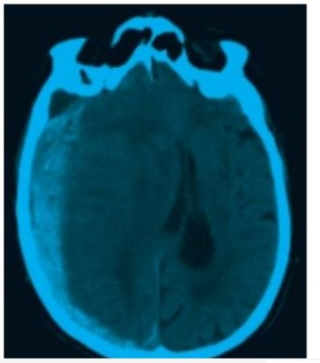
A Hemorragia subaracnoide.
B Hematoma subdural.
C Hematoma epidural.
D Lesão axonal difusa.
Questão 72 · Epidemiologia e Fisiopatologia · Emergências Pediátricas · Neuropediatria · 4000028130Em relação ao Traumatismo Cranioencefálico (TCE), considere estas assertivas. I. O TCE na infância é a principal causa de morte e invalidez na faixa etária abaixo de 12 anos de idade, sendo, nesse grupo, responsável por até 75% das mortes no Brasil; II. Aproximadamente 60% dos pacientes que sobrevivem a TCE apresentam sequelas graves, com de cit motor e cognitivo; III. Os traumas intencionais, caracterizados pela recorrência das lesões, podem passar desapercebidos em até um terço das vezes. As assertivas CORRETAS estão contidas em:
A I e II, apenas.
B I e III, apenas.
C II e III, apenas.
D I, II e III.
Questão 73 · Tratamento da Hipertensão Intracraniana · Hipertensão Intracraniana · Hipertensão Intracraniana · 4000010285Dentre as opções abaixo, assinale a única medida que não pode ser utilizada como estratégia para redução de pressão intracraniana em contexto de neurotrauma:
A Elevação de cabeceira em 30º.
B Uso de solução salina hipertônica.
C Sedação profunda com barbitúricos.
D Hipotermia induzida.
E Hipercapnia permissiva.
Questão 74 · Quadro Clínico · 4000001234Criança de 5 anos de idade chega a Unidade Básica de Saúde acompanhada da avó, com queixa principal de cefaleia e vômitos. Qual(is) o(s) sinal/sintoma(s) que sugerem a hipótese diagnóstica de tumor cerebral?
A Febre e dor em membros.
B Melhora da cefaleia com analgésico.
C Marcha claudicante e estrabismo.
D Sonolência.
Questão 75 · Hematoma Extradural · Hematoma Extradural · 4000126832Um homem com 26 anos de idade é atendido no Pronto-Socorro hospitalar após ter sido vítima de agressão e ter sofrido múltiplos ferimentos corto-contusos no couro cabeludo e na face. No momento da avaliação inicial, não apresenta abertura ocular nem mesmo à dor, localiza o estímulo doloroso e verbaliza apenas sons incompreensíveis. O médico plantonista solicita uma tomografia computadorizada de crânio, cuja imagem é mostrada a seguir Considerando o quadro clínico descrito e a imagem apresentada, qual a hipótese diagnóstica mais provável para o caso?
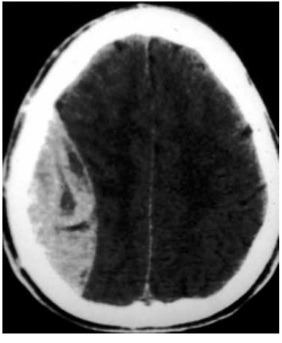
A Hematoma epidural.
B Hematoma subdural.
C Hemorragia intraparenquimatosa.
D Contunsões cerebrais coalescentes.
Questão 76 · Hipertensão Intracraniana · 4000126401Na fase inicial do trauma cranioencefálico grave com hematoma em expansão, a pressão intracraniana pode estar normal devido ao seguinte mecanismo de compensação:
A Saída de volume de liquor e sangue venoso do crânio.
B Saída de sangue arterial e venoso do crânio.
C Expansão volumétrica da caixa craniana pela abertura das cisuras.
D Hipotensão arterial com manutenção da frequência cardíaca.
E Saída de volume de liquor e sangue arterial do crânio.
Questão 77 · Escala de Coma de Glasgow · 4000105103Um dos métodos clínicos mais utilizados na atualidade para avalição de gravidade é a escala de Coma de Glasgow, que se relaciona com
A Topografia da Lesão.
B Tempo da Lesão.
C Melhor Resposta.
D Nível da Lesão Neurológica.
Questão 78 · Emergências Pediátricas · Hipertensão Intracraniana · Neuropediatria · 4000009071Dentre os sinais ou sintomas a seguir, assinale aquele que NÃO é considerado fator de risco de complicação de trauma cranioencefálico em crianças de 3 anos de idade.
A Cefaleia progressiva.
B Convulsões.
C Glasgow inicial > 13.
D Vômitos repetidos em jato.
Questão 79 · Escala de Coma de Glasgow · 4000001572Paciente vítima de atropelamento, chega ao pronto-socorro confusa, abre os olhos apenas quando é chamada, não obedece a comandos verbais, localiza a dor. Sua pontuação na escala de coma de Glasgow seria:
A 9
B 12
C 11
D 10
Questão 80 · Fratura de Base de Crânio · 4000111073O sinal clínico de uma fratura de base de crânio é equimose:
A Mentoniana.
B Periorbitária unilateral.
C Da asa nasal.
D Na região retroauricular e mastoidea.
E Na região frontal.
Questão 81 · Hematoma Extradural · 4000104416R.M., masculino, 58 anos, etilista, sofre queda de aproximadamente 6 degraus na escada de sua residência. Chega ao pronto-socorro trazido por familiares com Glasgow = 13 (abertura ocular ao chamado e confuso/desorientado) e hemiparesia desproporcionada incompleta contralateral ao local da sua lesão intracraniana. Realizou imediatamente tomogra a computadorizada de crânio sem contraste. (VER IMAGEM). Qual é a lesão que mais destaca-se na região parietal direita do corte tomográfico acima?
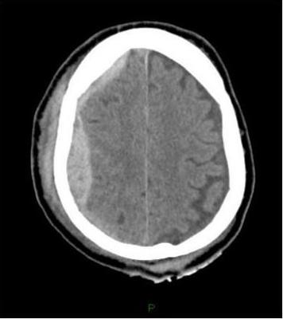
A Hematoma epidural.
B Hematoma subdural.
C Hemorragia subaracnóidea.
D Não há lesão na região parietal direita.
Questão 82 · Quadro Clínico · 4000099565AJM, 18 anos de idade, masculino, negro, sinistro, paciente previamente hígido, iniciou quadro de crises epilépticas parciais simples e complexas, sem febre, sem cefaleia, negou náuseas e vômitos. Ao exame neurológico: paciente consciente, orientado no tempo e no espaço, hemiparestesia em dimidio esquerdo. Negou antecedentes pessoal e familiar para epilepsia. Qual a principal hipótese diagnóstica?
A Processo expansivo em sistema nervoso central.
B Acidente vascular cerebral.
C Hemorragia subaracnóidea.
D Quadro conversivo.
Questão 83 · Escala de Coma de Glasgow · Escala de Coma de Glasgow · Escala de Coma de Glasgow · 4000077144Para avaliar inicialmente um paciente com traumatismo cranioencefálico, o residente utilizou a escala de Glasgow, que leva em conta:
A resposta verbal, reflexo cutâneo plantar e resposta motora.
B Reflexos pupilares, resposta verbal e reflexos profundos.
C abertura ocular, reflexos pupilares e reflexos profundos.
D abertura ocular, resposta verbal e resposta motora.
Questão 84 · Escala de Coma de Glasgow · Escala de Coma de Glasgow · Escala de Coma de Glasgow · 4000070385Uma mulher sofreu trauma severo e chega a rebaixamento do estado de consciência. Antes da intubação ela não abre os olhos, apresenta reflexo de retirada a estímulos dolorosos e emite sons incompreensíveis. Qual é a pontuação na escala de Glasgow:
A 3
B 4
C 5
D 6
E 7
Questão 85 · Hipertensão Intracraniana · Hipertensão Intracraniana · Hipertensão Intracraniana · 4000062691Em relação às alternativas terapêuticas para o controle da Hipertensão Intracraniana (HIC) na hemorragia intraparenquimatosa, assinale a alternativa INCORRETA:
A Medidas gerais como: manter cabeceira a 30º, extensão do pescoço, controle de temperatura, glicemias, eletrólitos, e boa oximetria (PaO2 > 70/90 e SatO2 > 95%), são essenciais na redução da HIC contribuindo para uma evolução positiva do paciente.
B O uso do Manitol 20% na dose de 0,5 a 1 g/kg, IV, em 5 a 30 minutos pode ser uma alternativa p/a redução da HIC.
C O uso da solução hipertônica (3%, 7,5% e 20%) pode ser considerada na HIC refratária, pois aumenta o intravascular, reduzindo a PIC.
D O uso de corticosteroides IV, são mandatórios no manejo do paciente com hemorragia intraparenquimatosa que evolui com aumento da pressão intracraniana. Visto que seu efeito anti-inflamatório supera seus efeitos colaterais.
Questão 86 · Fisiopatologia · Quadro Clínico · Vitamina B3Niacina · 4000062627Paciente de 50 anos é atendido no serviço de emergência do Hospital Escola da FMV com histórico de alcoolismo crônico e instalação aguda, segundo familiares, de confusão mental. Também são identi cados por seu exame: ataxia e estrabismo. Diante a esta situação clínica qual é sua suspeita diagnóstica?
A Hematoma subdural subagudo.
B Deficiência isolada de ácido nicotínico.
C Encefalopatia de Wernicke.
D Síndrome de Korsakoff.
Questão 87 · Hemorragia Subaracnoidea Traumática · Hematoma Extradural · Hematoma Subdural · 4000059177O efeito de massa é mais frequente no seguinte traumatismo craniano:
A Hematoma extradural.
B Hemorragia subaracnóidea.
C Hematoma subdural agudo.
D Hematoma intracerebral.
Questão 88 · Escala de Coma de Glasgow · Hipertensão Intracraniana · 4000042075Você está de plantão no Hospital Metropolitano de Urgência e Emergência, referência em trauma na região metropolitana e recebe um paciente de 50 anos, masculino, vítima de acidente de moto (colisão com poste), sem capacete. O mesmo encontra-se com hálito etílico, emite sons incompreensíveis, abre os olhos ao estímulo doloroso e retira o membro à dor. O murmúrio vesicular é presente bilateralmente, FR = 10, PA = 180 x 100, FC = 60 e SAT = 90%. Sobre este caso é correto afirmar que:
A O paciente está em Glasgow 6.
B A hipertensão do paciente deve ser tratada com anti-hipertensivos ainda no atendimento inicial.
C A realização da tomografia de crânio deve ser com contraste venoso.
D A prioridade do caso é avaliar a reação pupilar e exame neurológico.
E O paciente corre o risco de apresentar a tríade de Cushing.
Questão 89 · Tratamento da Hipertensão Intracraniana · Hipertensão Intracraniana · 4000089901São abordagens adotadas para o tratamento da hipertensão intracraniana, EXCETO:
A Tentar manter a PaCO2 entre 30 a 35 mmHg.
B Monitorar a pressão intracraniana com o objetivo de manter a pressão de perfusão cerebral menor que 60 mmHg.
C Nos casos de edema por tumor, a dexametasona 4 mg 6-6h pode ser indicada.
D Sedação com benzodiazepínicos ou propofol.
E Manter osmolalidade sérica menor que 320 mosmol.
Questão 90 · Escala de Coma de Glasgow · Escala de Coma de Glasgow · Escala de Coma de Glasgow · 4000067227Paciente jovem, vítima de trauma, atendido em via pública por ambulância do Corpo de Bombeiros. Na avaliação inicial, pela Escala de Coma de Glasgow, apresentava respostas verbais inadequadas, resposta motora de retirada do membro aos estímulos dolorosos e abertura ocular ao estímulo doloroso. Face ao exposto, qual a pontuação nesta Escala?
A 3.
B 5.
C 7.
D 9.
E 11.
Questão 91 · Escala de Coma de Glasgow · Escala de Coma de Glasgow · Escala de Coma de Glasgow · 4000063678Paciente vítima de TCE, com hálito etílico, apresenta abertura ocular espontânea, responde verbalmente as solicitações, com certa desorientação espacial, e mobiliza os membros às solicitações verbais. A escala de coma de Glasgow é :
A 10
B 14
C 12
D 11
E 15
Questão 92 · Hipertensão Intracraniana · Manejo Clínico · Classif icação · 4000127265Homem com 20 anos de idade, vítima de colisão motociclística em via pública, foi levado ao hospital pela equipe de suporte básico de vida, que relatou inconsciência durante todo o atendimento. Apresenta abertura ocular à dor, emite palavras inapropriadas e postura de decorticação ao estímulo doloroso, com anisocoria (pupila D > E). Os sinais vitais são: frequência cardíaca = 68 bpm, pressão arterial = 160 x 100 mmHg, frequência respiratória = 20 irpm e saturação de oxigênio de 98%. A tomogra a computadorizada de crânio mostrou hematoma subdural com desvio importante da linha média. As condutas tomadas para minimizar o dano cerebral, além da manutenção de vias aéreas, ventilação e controle da volemia, devem ser:
A craniotomia imediata para drenagem do hematoma e instalação de monitorização de pressão intracraniana.
B fixação de parâmetros ventilatórios para manter a pCO2 entre 25 e 30 mmHg, manitol endovenoso em bolus e craniotomia após redução da pressão intracraniana para drenagem do hematoma.
C fixação de parâmetros ventilatórios para manter a pCO2 entre 25 e 30 mmHg, furosemida por via endovenosa em bolus, craniotomia imediata para drenagem do hematoma e instalação de monitorização de pressão intracraniana.
D fixação de parâmetros ventilatórios para manter a pCO2 entre 25 e 30 mmHg, manitol endovenoso em infusão lenta, craniotomia imediata para drenagem do hematoma e instalação de monitorização de pressão intracraniana.
E fixação de parâmetros ventilatórios para manter a pCO2 entre 25 e 30 mmHg, manitol endovenoso em bolus, craniotomia imediata para drenagem do hematoma e instalação de monitorização de pressão intracraniana.
Questão 93 · Hematoma Subdural · Hematoma Subdural Agudo · Hematoma Subdural · 4000080738Paciente de 68 anos, após traumatismo craniano evolui com cefaleia, sonolência, confusão mental progressiva e dé cit focal instalando-se 3 semanas após. Qual sua principal hipótese?
A concussão cerebral.
B hemorragia cerebral.
C hemorragia epidural.
D hemorragia subdural.
Questão 94 · Traumatismo Cranioencef álico · Traumatismo Craniencef álico · 4000098353Dos pacientes abaixo descritos, quais têm indicação ABSOLUTA de realização de TC de crânio no PS?
A Sexo masculino, 19 anos, acidente de moto com EPI, apresentando GCS: 15 e dois episódios de vômitos desde o acidente.
B Sexo feminino, 75 anos, queda da escada com fratura de fêmur direito. GCS: 15 desde a queda, sem vômitos, sem amnésia, com discreto hematoma subgaleal frontal esquerdo.
C Sexo masculino, 16 anos, T: 39,4° C, cefaléia de origem insidiosa e vômitos, sem sinais localizatórios, sem histórico de imunossupressão.
D Sexo masculino, 36 anos, etilista, encontrado em via pública com sinais evidentes de intoxicação exógena, GCS: 14, sem outras alterações ao exame neurológico.
Questão 95 · Hematoma Extradural · Hematoma Extradural · 4000076052São usualmente causados por injúria arterial e correspondem à emergência cirúrgica, exceto:
A hematoma epidural.
B hematoma subdural.
C hemorragia subaracnoideia.
D hematoma intraparenquimatoso.
Questão 96 · Tratamento da Hipertensão Intracraniana · Hipertensão Intracraniana · Hipertensão Intracraniana · 4000061476Um dos tratamentos da hipertensão intracraniana é:
A hipoventilação.
B elevação da cabeceira do paciente em 30 a 45°.
C hipotermia.
D macronebulização.
E anticonvulsivante.
Questão 97 · Hematoma Subdural Agudo · 4000097618No hematoma subdural agudo:
A Edema da papila é raramente visto.
B O nível de consciência não costuma apresentar flutuações.
C Raramente ocorre anisocona.
D A hemiplegia raramente é do tipo espástico.
E Raramente está associada a contusão craniana.
Questão 98 · Escala de Coma de Glasgow · Escala de Coma de Glasgow · Escala de Coma de Glasgow · 4000064127Um paciente masculino de 23 anos, vítima de colisão moto x ônibus, foi socorrido e levado à emergência de um hospital público pelo CBMERJ. Ele era o condutor da motocicleta, e não fazia o uso de capacete. Tinha sinais vitais estáveis, porém não apresentava abertura ocular, não tinha resposta verbal ou motora aos estímulos. Com base na escala de coma de Glasgow, tal paciente é classificado como:
A 0
B 1
C 2
D 3
E 4
Questão 99 · Hipertensão Intracraniana · Hipertensão Intracraniana · 4000110924A tríade sintomática clássica da hipertensão intracraniana é:
A Cefaleia, paralisia de nervo oculomotor, ataxia.
B Vômitos, disfagia, ataxia.
C Cefaleia, vômitos, edema de papila.
D Edema de papila, disfasia, disartria.
E Disfasia, disartria, dismetria.
Questão 100 · Hematoma Extradural · Hematoma Extradural · 4000103543Uma criança de 7 anos caiu de uma altura de aproximadamente 5 metros, sobre uma superfície rígida. Por alteração do nível de consciência, foi levada a um hospital de referência para trauma, onde foi feita a tomogra a ilustrada a seguir: (VER IMAGEM). Em relação à lesão cerebral traumática desta criança, é correto afirmar:
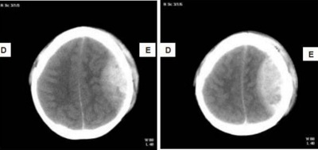
A Se for operada precocemente, a criança pode ter recuperação neurológica excelente.
B Se tiver ocorrido período lúcido após a queda, o prognóstico é muito bom.
C É provável que a criança tenha anisocoria, sendo a pupila direita maior que a esquerda.
D Estas lesões costumam acompanhar-se de grande destruição do parênquima cerebral.
E Como a tomografia não mostra desvio significativo da linha média, o tratamento pode ser inicialmente não operatório.
Questão 101 · Hematoma Extradural · Hematoma Extradural · 4000008936Desgarrado da torcida organizada de seu clube, um rapaz viu-se cercado por admiradores do time adversário e acabou recebendo forte paulada na cabeça. Sangrando muito no coro cabeludo, foi removido para uma clínica particular, onde disse estar bem e “pronto para outra”. Não havia TC disponível, mas uma radiogra a simples do crânio mostrou uma linha de fratura na têmpora direita. Horas depois, ele cou desorientado, torporoso e, por m, comatoso. Essa clássica evolução, com progressiva deterioração neurológica em casos de TCE, mais comumente decorre de:
A Hematoma subdural.
B Lesão isquêmica talâmica.
C Contusão do ângulo pontocerebelar.
D Hematoma epidural.
E Hemorragia subaracnoidea.
Questão 102 · Hematoma Subdural Agudo · Hematoma Subdural · Hematoma Subdural Agudo · 4000079354Severino, 45 anos, funcionário da construção civil, etilista de longa data, com ferida cortocontusa na região supraorbitária à direita. Caso clínico - Foi trazido por amigos à emergência após a queda da própria altura no trabalho. Estava visivelmente alcoolizado. Apresentava moderado sangramento na ferida, além de escoriações em face. Agitado, circulava no ambiente um pouco trôpego, respirava espontaneamente e recusava atendimento médico. Três semanas após o atendimento, Severino retornou acompanhado dos mesmos amigos ao mesmo plantão. Evoluíra bem até dois dias atrás, quando começou a apresentar tremores de extremidades, sudorese profusa, inquietação psicomotora e vômitos. Ao exame, apresenta fácies de perplexidade. Sinais Vitais: PA = 160 x 90 mmHg, FC = 110 bpm, FR = 26 irpm e Tax = 36°C. O mestre de obras do local em que Severino trabalhava comentou que ele não teria direito a atendimento médico porque não tem carteira assinada e sua queda não poderia ser caracterizada como acidente de trabalho. Após a alta, Severino foi encaminhado para PROJAD (Programa de Estudos e Assistência ao Uso Indevido de Drogas). É casado, com dois lhos, 1º grau completo. Bebe há mais de vinte anos. Queixava-se de insônia, pesadelos, desânimo, falta de esperança, vontade de morrer e pensamentos persistentes de autoextermínio. Uma tentativa de suicídio no passado por ingesta de grande quantidade de diazepan. Depois disso, muitas vezes pensou em suicidar-se. Relacionava os pensamentos suicidas à baixa autoestima, à falta de perspectivas futuras e à incapacidade de prover a família. Nunca usou outras drogas, mas as recaídas por abuso de álcool já o tinham levado a diversas internações no passado. Apesar de ter casa, dorme na construção para não gastar dinheiro de passagem. Perdeu diversos empregos pelo alcoolismo. Na entrevista, foi submetido a um questionário padronizado (CAGE) no teste de triagem de alcoolismo, cuja sigla é formada pelas iniciais em inglês de palavra- chave das seguintes perguntas: Alguma vez o senhor sentiu que deveria diminuir (Cut Down) a quantidade de bebida?/ As pessoas o aborrecem (Annoyed) com as críticas que fazem?/ O senhor se sente culpado (Guilty) pela bebida?/ O senhor costuma beber pela manhã (Eye-opener) para diminuir o nervosismo? Uma metanálise avaliou a utilização do CAGE para detectar abuso e dependência de álcool no nível da atenção primária, sendo estimadas sensibilidade de 43% e 94% e especi cidade de 70% e 97%, respectivamente, para duas ou mais respostas positivas. Dois meses depois da internação relatada, Severino foi atendido em via pública, após queda de uma laje, com lesão traumática de crânio. No hospital seus amigos disseram, que depois da queda, perdeu a consciência por 3 minutos e, ao recobrá-la, permaneceu levemente confuso. Não se lembrava da queda e referia muita cefaleia. O exame físico era normal. Os sinais vitais estavam estáveis, o Coma Glasgow escore (CGE) era 15 e não havia sinais focais. Quatro meses depois foi atropelado. Atendido em via pública chegou à emergência com colar cervical, havia fratura de costelas à esquerda com hemopneumotórax; fratura de fêmur direito, escoriações no braço direito e na parede anterior do tórax. O escore de Glasgow para o coma era 10 (2-4-4). Sinais Vitais: PA = 115 x 90 mmHg, FC = 98 bpm, FR = 18 irpm. Realizada RNM, demonstrada abaixo (VER IMAGEM). A conduta terapêutica nesse momento é: Respostas: 1 12 23 34 45 56 67 78 89 100
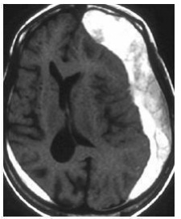
A cirurgia imediata e fenitoína.
B acesso venoso profundo e dexametasona.
C manitol e hiperventilação.
D punção lombar descompressiva e fenobarbital.